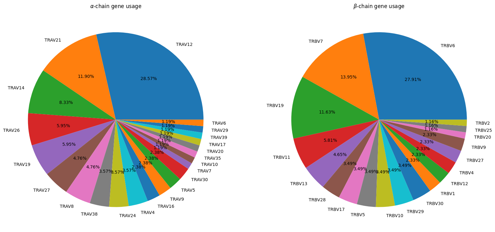

Summary of apo-holo data
Introduction
In this notebook, we look at the data used to create the apo-holo comparisons, generating plots and summary statistics.
[1]:
import os
import subprocess
import tempfile
import logomaker
import matplotlib.pyplot as plt
import networkx as nx
import numpy as np
import openchord
import pandas as pd
from IPython.display import display, Markdown
from pyxdameraulevenshtein import damerau_levenshtein_distance
from tcr_pmhc_interface_analysis.utils import mhc_slug_to_code
Matplotlib is building the font cache; this may take a moment.
[2]:
apo_holo_summary = pd.read_csv('../data/processed/apo-holo-tcr-pmhc-class-I/apo_holo_summary.csv')
apo_holo_summary
[2]:
| file_name | pdb_id | structure_type | state | alpha_chain | beta_chain | antigen_chain | mhc_chain1 | mhc_chain2 | cdr_sequences_collated | peptide_sequence | mhc_slug | |
|---|---|---|---|---|---|---|---|---|---|---|---|---|
| 0 | 1ao7_D-E-C-A-B_tcr_pmhc.pdb | 1ao7 | tcr_pmhc | holo | D | E | C | A | B | DRGSQS-IYSNGD-AVTTDSWGKLQ-MNHEY-SVGAGI-ASRPGLA... | LLFGYPVYV | hla_a_02_01 |
| 1 | 1b0g_C-A-B_pmhc.pdb | 1b0g | pmhc | apo | NaN | NaN | C | A | B | NaN | ALWGFFPVL | hla_a_02_01 |
| 2 | 1b0g_F-D-E_pmhc.pdb | 1b0g | pmhc | apo | NaN | NaN | F | D | E | NaN | ALWGFFPVL | hla_a_02_01 |
| 3 | 1bd2_D-E-C-A-B_tcr_pmhc.pdb | 1bd2 | tcr_pmhc | holo | D | E | C | A | B | NSMFDY-ISSIKDK-AAMEGAQKLV-MNHEY-SVGAGI-ASSYPGG... | LLFGYPVYV | hla_a_02_01 |
| 4 | 1bii_P-A-B_pmhc.pdb | 1bii | pmhc | apo | NaN | NaN | P | A | B | NaN | RGPGRAFVTI | h2_dd |
| ... | ... | ... | ... | ... | ... | ... | ... | ... | ... | ... | ... | ... |
| 386 | 7rtd_C-A-B_pmhc.pdb | 7rtd | pmhc | apo | NaN | NaN | C | A | B | NaN | YLQPRTFLL | hla_a_02_01 |
| 387 | 7rtr_D-E-C-A-B_tcr_pmhc.pdb | 7rtr | tcr_pmhc | holo | D | E | C | A | B | DRGSQS-IYSNGD-AVNRDDKII-SEHNR-FQNEAQ-ASSPDIEQY | YLQPRTFLL | hla_a_02_01 |
| 388 | 8gvb_A-B-P-H-L_tcr_pmhc.pdb | 8gvb | tcr_pmhc | holo | A | B | P | H | L | YGATPY-YFSGDTLV-AVGFTGGGNKLT-SEHNR-FQNEAQ-ASSD... | RYPLTFGW | hla_a_24_02 |
| 389 | 8gvg_A-B-P-H-L_tcr_pmhc.pdb | 8gvg | tcr_pmhc | holo | A | B | P | H | L | YGATPY-YFSGDTLV-AVGFTGGGNKLT-SEHNR-FQNEAQ-ASSD... | RFPLTFGW | hla_a_24_02 |
| 390 | 8gvi_A-B-P-H-L_tcr_pmhc.pdb | 8gvi | tcr_pmhc | holo | A | B | P | H | L | YGATPY-YFSGDTLV-AVVFTGGGNKLT-SEHNR-FQNEAQ-ASSL... | RYPLTFGW | hla_a_24_02 |
391 rows × 12 columns
Summary Numbers
[3]:
num_entries = len(apo_holo_summary)
num_pdb_ids = len(apo_holo_summary['pdb_id'].unique())
print('There are', num_entries, 'entries in the dataset spread across', num_pdb_ids, 'PDB structures.')
There are 391 entries in the dataset spread across 301 PDB structures.
[4]:
def both_apo_holo(group: pd.DataFrame, structure_type: str) -> bool:
apo_structures = group.query("state == 'apo' and structure_type == @structure_type")
holo_structures = group.query("state == 'holo'")
return len(apo_structures) >= 1 and len(holo_structures) >= 1
[5]:
both_apo_holo_tcrs = apo_holo_summary.groupby('cdr_sequences_collated').apply(lambda group: both_apo_holo(group, 'tcr'))
apo_holo_tcrs = both_apo_holo_tcrs.index[both_apo_holo_tcrs].tolist()
num_unique_tcrs = len(apo_holo_tcrs)
display(Markdown((f'There are {num_unique_tcrs} TCRs with both *apo* and *holo* conformations in the dataset. '
'Here is the list of them based on their CDR sequences:')))
print('\n'.join(apo_holo_tcrs))
There are 22 TCRs with both apo and holo conformations in the dataset. Here is the list of them based on their CDR sequences:
ATGYPS-ATKADDK-ALSDPVNDMR-SGHAT-FQNNGV-ASSLRGRGDQPQH
DRGSQS-IYSNGD-ALTRGPGNQFY-SGHVS-FNYEAQ-ASSSPGGVSTEAF
DRGSQS-IYSNGD-AVNFGGGKLI-MRHNA-SNTAGT-ASSLSFGTEAF
DRGSQS-IYSNGD-AVNRDDKII-SEHNR-FQNEAQ-ASSPDIEQY
DRGSQS-IYSNGD-AVRTNSGYALN-QGHDT-YYEEEE-ASSDTVSYEQY
DRGSQS-IYSNGD-AVTTDSWGKLQ-MNHEY-SVGAGI-ASRPGLAGGRPEQY
DRGSQS-IYSNGD-GTYNQGGKLI-MNHEY-SMNVEV-ASSGASHEQY
DSAIYN-IQSSQRE-AQLNQAGTALI-MNHEY-SVGAGI-ASSYGTGINYGYT
DSAIYN-IQSSQRE-AVRMDSSYKLI-SEHNR-FQNEAQ-ASSSWDTGELF
DSAIYN-IQSSQRE-AVRPLLDGTYIPT-MNHEY-SVGAGT-ASSYLGNTGELF
DSAIYN-IQSSQRE-AVRPTSGGSYIPT-MNHEY-SVGAGI-ASSYVGNTGELF
FLGSQS-TYREGD-AVNDGGRLT-GTSNPN-WGPFG-AWSETGLGMGGWQ
NIATNDY-GYKTK-LVGEILDNFNKFY-MDHEN-SYDVKM-ASSQRQEGDTQY
NSAFDY-ILSVSNK-AASASFGDNSKLI-MSHET-SYDVDS-ASSLGHTEVF
NSAFQY-TYSSGN-AMRGDSSYKLI-SGHDY-FNNNVP-ASSLWEKLAKNIQY
NSASQS-VYSSG-VVQPGGYQKVT-MNHNS-SASEGT-ASSEGLWQVGDEQY
NSASQS-VYSSG-VVRAGKLI-MNHEY-SVGEGT-ASGQGNFDIQY
SVFSS-VVTGGEV-AGAGSQGNLI-LNHDA-SQIVND-ASSSRSSYEQY
TISGNEY-GLKNN-IVWGGYQKVT-SEHNR-FQNEAQ-ASRYRDDSYNEQF
TISGTDY-GLTSN-ILPLAGGTSYGKLT-SGHVS-FQNEAQ-ASSLGQAYEQY
YSATPY-YYSGDPVV-AVSGFASALT-NNHNN-SYGAGS-ASGGGGTLY
YSGSPE-HISR-ALSGFNNAGNMLT-SGHAT-FQNNGV-ASSLGGAGGADTQY
[6]:
both_apo_holo_pmhcs = apo_holo_summary.groupby(['mhc_slug', 'peptide_sequence']).apply(lambda group: both_apo_holo(group, 'pmhc'))
apo_holo_pmhcs = both_apo_holo_pmhcs.index[both_apo_holo_pmhcs].tolist()
mhc_slugs = set([slug for slug, _ in apo_holo_pmhcs])
peptide_sequences = set([peptide for _, peptide in apo_holo_pmhcs])
num_combinations = len(apo_holo_pmhcs)
num_unique_mhcs = len(mhc_slugs)
num_unique_peptides = len(peptide_sequences)
display(Markdown((f'There are {num_combinations} combinations of MHC alleles and peptides with '
'both *apo* and *holo* structures.'
f'These come from {num_unique_mhcs} MHC alleles and {num_unique_peptides} unique peptides.'
'Here are the combinations:')))
pd.DataFrame({
'MHC Allele': [slug for slug, _ in apo_holo_pmhcs],
'Peptide': [peptide for _, peptide in apo_holo_pmhcs],
}, index=pd.RangeIndex(start=1, stop=len(apo_holo_pmhcs) + 1, name='Index'))
There are 81 combinations of MHC alleles and peptides with both apo and holo structures.These come from 19 MHC alleles and 79 unique peptides.Here are the combinations:
[6]:
| MHC Allele | Peptide | |
|---|---|---|
| Index | ||
| 1 | h2_db | ASNENMETM |
| 2 | h2_db | KAPANFATM |
| 3 | h2_db | KAPFNFATM |
| 4 | h2_db | KAPYDYAPI |
| 5 | h2_db | KAPYNFATM |
| ... | ... | ... |
| 77 | hla_b_51_01 | TAFTIPSI |
| 78 | hla_b_53_01 | QASQEVKNW |
| 79 | hla_b_81_01 | TPQDLNTML |
| 80 | hla_c_08_02 | GADGVGKSAL |
| 81 | hla_e_01_03 | RLPAKAPLL |
81 rows × 2 columns
Data plots
[7]:
stcrdab_summary = pd.read_csv('../data/raw/stcrdab/db_summary.dat', delimiter='\t')
[8]:
apo_holo_summary = apo_holo_summary.merge(stcrdab_summary,
how='left',
left_on=['pdb_id', 'alpha_chain', 'beta_chain'],
right_on=['pdb', 'Achain', 'Bchain'])
[9]:
apo_holo_summary_non_redundant_tcrs = apo_holo_summary.drop_duplicates('cdr_sequences_collated')
apo_holo_summary_non_redundant_pmhcs = apo_holo_summary.drop_duplicates(['mhc_slug', 'peptide_sequence'])
[10]:
fig, axes = plt.subplots(ncols=2, figsize=(20, 20))
apo_holo_summary_non_redundant_tcrs['alpha_subgroup'].dropna().value_counts().plot.pie(title=r'$\alpha$-chain gene usage',
autopct='%1.2f%%',
ax=axes[0])
apo_holo_summary_non_redundant_tcrs['beta_subgroup'].dropna().value_counts().plot.pie(title=r'$\beta$-chain gene usage',
autopct='%1.2f%%',
ax=axes[1])
for ax in axes:
ax.set_ylabel('')

[11]:
counts = apo_holo_summary_non_redundant_tcrs.value_counts(['alpha_subgroup', 'beta_subgroup'])
labels = sorted(np.concatenate([apo_holo_summary_non_redundant_tcrs['alpha_subgroup'].dropna().unique(),
apo_holo_summary_non_redundant_tcrs['beta_subgroup'].dropna().unique()]).tolist())
num_labels = len(labels)
adjacency_matrix = np.zeros((num_labels, num_labels), dtype=int)
for i in range(num_labels):
for j in range(i + 1, num_labels):
try:
adjacency_matrix[i, j] = counts[labels[i]][labels[j]]
except KeyError:
adjacency_matrix[i, j] = 0
adjacency_matrix = np.maximum(adjacency_matrix, adjacency_matrix.transpose())
[12]:
fig = openchord.Chord(adjacency_matrix, labels)
fig.colormap = ['#636EFA',
'#EF553B',
'#00CC96',
'#AB63FA',
'#FFA15A',
'#19D3F3',
'#FF6692',
'#B6E880',
'#FF97FF',
'#FECB52']
fig.radius = 300
fig.padding = 150
fig.font_size = 12
fig.show()
[12]:
[13]:
(apo_holo_summary_non_redundant_pmhcs['mhc_slug'].dropna()
.map(mhc_slug_to_code)
.value_counts()
.plot.pie(figsize=(15, 15), autopct='%1.2f%%'))
plt.title('Breakdown of the different MHC alleles in the data')
plt.ylabel('')
plt.show()
[14]:
sequences = apo_holo_summary_non_redundant_pmhcs['peptide_sequence'].dropna().values
[15]:
with tempfile.TemporaryDirectory() as directory:
input_file = os.path.join(directory, 'input.fasta')
output_file = os.path.join(directory, 'output.fasta')
with open(input_file, 'w') as fh:
fh.write('\n'.join([f'>{num}\n{seq}\n' for num, seq in enumerate(sequences, 1)]))
cmd = f'clustalw2 -INFILE={input_file} -OUTFILE={output_file} -OUTPUT=FASTA'
subprocess.run(cmd.split(), check=True, stdout=subprocess.DEVNULL)
with open(output_file, 'r') as fh:
aligned_sequences = [line.strip() for line in fh.readlines() if not line.startswith('>')]
[16]:
probs = logomaker.alignment_to_matrix(aligned_sequences, to_type='information')
logomaker.Logo(probs, color_scheme='chemistry')
plt.ylabel('Bits')
plt.xticks([])
plt.show()
/project/koohylab/bmcmaste/miniconda3/envs/tcr-pmhc-interface-analysis/lib/python3.10/site-packages/logomaker/src/matrix.py:584: FutureWarning: In a future version, `df.iloc[:, i] = newvals` will attempt to set the values inplace instead of always setting a new array. To retain the old behavior, use either `df[df.columns[i]] = newvals` or, if columns are non-unique, `df.isetitem(i, newvals)`
counts_df.loc[:, c] = tmp_mat.sum(axis=0).T
[17]:
distance_matrix = np.zeros((sequences.shape[0], sequences.shape[0]), dtype=int)
for i in range(sequences.shape[0]):
for j in range(i + 1, sequences.shape[0]):
distance_matrix[i, j] = damerau_levenshtein_distance(sequences[i], sequences[j])
distance_matrix = np.maximum(distance_matrix, distance_matrix.T)
print(f'The average levenshtein distance between all peptide sequences is {np.average(distance_matrix):.2f} edits',
f'with an standard deviation of {np.std(distance_matrix):.2f} edits.')
The average levenshtein distance between all peptide sequences is 8.38 edits with an standard deviation of 1.78 edits.
[18]:
CUTOFF_PERCENT = 70
sequence_lengths = np.array([len(seq) for seq in sequences])
grid1, grid2 = np.meshgrid(sequence_lengths, sequence_lengths)
max_lengths = np.maximum(grid1, grid2)
sequence_percent_identities = ((max_lengths - distance_matrix) / max_lengths) * 100
similar_peptides = sequence_percent_identities > CUTOFF_PERCENT
[19]:
G = nx.Graph()
G.add_nodes_from(range(sequences.shape[0]))
for i in range(1, sequences.shape[0]):
for j in range(i + 1, sequences.shape[0]):
if similar_peptides[i, j]:
G.add_edge(i, j, weight=sequence_percent_identities[i, j] / 100)
[20]:
mhc_slugs_for_sequences = apo_holo_summary_non_redundant_pmhcs[
['peptide_sequence', 'mhc_slug']
].query('peptide_sequence.notnull()')['mhc_slug'].values
allele_options = sorted(list(set(list(mhc_slugs_for_sequences))))
[21]:
matplotlib_colors = plt.rcParams['axes.prop_cycle'].by_key()['color']
n = int(np.ceil(len(allele_options) / len(matplotlib_colors)))
colour_palette = dict(zip(allele_options, matplotlib_colors * n))
[22]:
node_colours = [colour_palette[slug] for slug in mhc_slugs_for_sequences]
[23]:
positions = nx.nx_agraph.graphviz_layout(G, prog="neato")
nx.draw(G, positions, node_color=node_colours, node_size=50)
plt.title(f'Peptide repertoire of the TCR:pMHCs grouped at {CUTOFF_PERCENT}% identity')
plt.show()
Conclusion
Based on the plots and summary statistics in this notebook, it is evident that the dataset is quite biased towards certain TCR genes and MHC Alleles. The peptides are moderately well balanced. This will need to be taken into account in the conclusions drawn throughout the rest of the project.